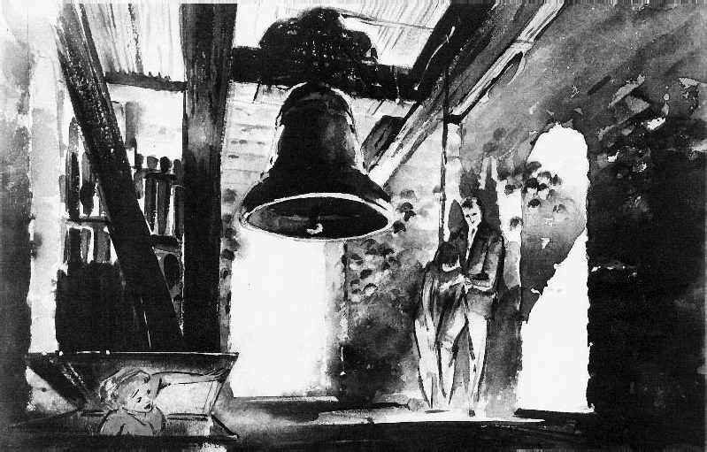

Hitchcock's Vertigo
The Unrelenting Male Gaze that Blurs the Lines Between Possession and
Obsession
By Koraljka Suton
It is no secret that the late Alfred Hitchcock was—and still is—not only one of the most revered filmmakers
in
the
history of cinema, but also the Master of Suspense.
After having started his career as a silent
film title
designer and art director, the London-born auteur had his directorial debut with the 1925 (silent) movie The
Pleasure Garden and subsequently went on to make a number of films that would, after a mere few shots,
become
instantly recognizable as his. Dramatic shadows, unpredictable visual revelations and odd camera angles were
all
part of his repertoire, with the narrative of wrongfully accused people becoming a pervasive one throughout
his
career. He often told the story of how his father would treat him after he would misbehave during his
childhood—the
boy would be sent down to a police station with a note intended for the sergeant, asking him to lock the
child
up
for the purpose of teaching him a lesson.
As a result, an adult Hitchcock once said that he wanted
the
words
You
see what can happen if you are not a good boy engraved on his tombstone. It also made the subject matter of
blameless people on the run into one of his favorite thematic elements. During his career that spanned six
decades
and included over fifty feature films, this wildly studied filmmaker earned forty-six Academy Award
nominations
and
won a total of six times. By the year 1960, he had made four movies that are still regarded among the best
of
all
time. One of them is, of course, the 1959 noir Vertigo (with the other three being Rear Window (1954), North
by
Northwest (1959) and Psycho (1960)). But the now-adored film was not always considered one of Hitchcock's
masterpieces, quite the contrary.
Upon Vertigo's release, critics were nowhere near impressed with the screenplay, finding the story
unconvincing
and
farfetched, and audiences were not on board with either the mystery being resolved two-thirds into the movie
or
with
watching Jimmy Stewart in a role very much unlike those they were used to seeing him in, such as that of
J.B.
Jeff
Jefferies in Rear Window and Dr. Ben McKenna in The Man Who Knew Too Much (1956)—in both cases, viewers were
quick
to side with the main characters, which is not something that could be said for Stewart's John
Scottie
Ferguson in
Vertigo, who made them feel all sorts of ambiguous ways. On top of that, the creation of suspense that
Hitchcock's
films became so known for was not the primary driving force of Vertigo, leaving audiences baffled and
confused.
But
with the passing of time, the director's misunderstood gem finally got the recognition it had deserved all
along—in
1982, Vertigo entered the list of the ten greatest movies of all time published in the British Film
Institute's
magazine called Sight & Sound, and came in seventh place. By 2002, it ranked up, coming in a close second,
and
in
the 2012 edition, it was voted into first place, dethroning the movie that had occupied that position since
1962—Orson Welles' Citizen Kane. In 1989, it was deemed culturally, historically and aesthetically
significant
by
the United States Library of Congress and selected for preservation in the National Film Registry.
Hitchcock wanted to buy the rights to a novel called Celle qui n'etait plus (translated into English as She Who Was No More) by writers Pierre Boileau and Thomas Narcejac, but unfortunately for him, director Henri-Georges Clouzot had beaten him to it and had directed the 1955 movie entitled Les Diaboliques based on said source material. The filmmaker was, therefore, very vigilant when it came to any new material written by the two—so when the follow-up D'entres les morts hit the bookstores in 1954, the director had Paramount commission a synopsis before the novel even got a chance to get translated into English. When the studio secured the rights, playwright Maxwell Anderson (Anne of the Thousand Days, The Bad Seed) got the job of adapting the novel into a film. Anderson wrote a script entitled Darkling, I Listen—a quote from English poet John Keats' poem Ode to a Nightingale—and Hitchcock did not like it one bit, so he discarded the draft and brought in Alec Coppel (The Captain's Paradise, Mr. Denning Drives North) instead. Unfortunately, his second pick did not satisfy him either, leading to Samuel L. Taylor (Avantil, Sabrina) being hired to write the screenplay from scratch, with the help of Hitchcock's notes. Taylor wanted to take sole credit for his work, but Coppel would not have it, and objected to the Screen Writers Guild, after which both were credited and Anderson was left out. Kim Novak was cast alongside Jimmy Stewart, although the part of the female lead was initially intended for Vera Miles, who would later on play her most memorable role in Psycho. Miles became pregnant so the director chose Novak instead. By the time the actress was ready to start shooting after having taken care of her other commitments, Miles became available again, only to find out that Hitchcock had decided to stick with his new leading lady.
Vertigo follows John Scottie
Ferguson, a police officer who discovers he has a fear of heights that
manifests
itself as vertigo, forced to retire after his condition results in an unfortunate event taking place. He
spends
his
time with his friend and ex-fiancée Marjorie Midge
Wood (Barbara Bel Geddes), a smart and
independent
woman
who
obviously still has feelings for him. But Scottie's daily routine suddenly gets a bit more exciting when his
old
college friend Gavin Elster (Tom Helmore) contacts him and asks for a very peculiar favor. Elster wants his
wife
Madeleine (Kim Novak) followed, but not because he suspects her of infidelity—but rather because he is
afraid
for
her mental health. Madeleine is presumably acting out the final days of her late great-grandmother's
miserable
life
and Scottie becomes more than intrigued by the mysterious blond young woman who does not seem to know where
she
is
going or what she is doing. Our protagonist soon finds himself enamored and unable to stay away, on the one
hand
desperately trying to get to the bottom of the mystery that is Madeleine and on the other reveling in it,
for it
is
precisely the unknown about this woman that fuels his attraction turned obsession.
A shocking plot twist and resolution to the mystery that happens before the final third of the movie—the perceived premature reveal that left contemporary audiences dissatisfied—sets Scottie on a downward spiral that ends in his obsession taking control over both his actions and his life. For it is here that we clearly see the sad truth of a man in love with an untouchable fantasy, a phantasm in his head that no woman could ever live up to—not even the one he claims to be in love with. For the character of Madeleine is the epitome of the unknown woman, so mysterious, evasive and alluring that a person could project all of their deepest desires onto her, forever worshipping and feeling a miraculous pull towards the constructed image in their mind's eye, provided real facts about her remain obscured and she herself stay just slightly out of reach. Scottie's inability to fully understand Madeleine drives him mad with desire and gives rise to an urge within him—the urge to try. And when he does, it is to no avail, for his every attempt provides him with yet another intricate puzzle piece, the result being the opposite of driving him away. The more the truth evades him, the more obsessed he gets with getting to the bottom of Madeleine, but this is, in fact, a puzzle he subconsciously never wants solved, for that would imply his attraction ceasing to exist, and with it, his vertigo, which could be viewed as a metaphor for the loss of control and sense of disorientation experienced when falling hopelessly in love. And that is something Scottie cannot afford to do.
On one level, Vertigo is a clever story about the factuality of the unrelenting male gaze that dominates and
dictates both our shared collective reality and the majority of the narratives we as a species create and
willingly
consume, but it should also be viewed as a clever deconstruction of it. In depicting a man who, at a certain
point
in the film, controls what a woman should look like, how she should talk, walk and behave in order to adhere
to
his
fantasy and cater to his gaze, Hitchcock unsubtly reveals his own obsession with controlling his actresses
and
his
attempt at turning them into the perfect Hitchcock blond.
As Kim Novak stated in a 1996 interview
with
Roger
Ebert: Of course, in a way, that was how Hollywood treated its women in those days. I could really identify
with
(…) being pushed and pulled this way and that, being told what dresses to wear, how to walk, how to behave.
I
think
there was a little edge in my performance that I was trying to suggest that I would not allow myself to be
pushed
beyond a certain point—that I was there, I was me, I insisted on myself. In other words, possessing a woman
becomes
an obsession in and of itself—and in obsessing, the man himself acts as if he were possessed. But on another
level,
Vertigo's male voyeur is actually the one who finds himself on the submissive side of this patriarchal
powerplay—for
he is not the one who controls the narrative, she is. Scottie is rendered powerless by the idealized and
idolized
fantasy in his mind, unaware of who the unknown woman really is and oblivious to what is actually taking
place.
She,
on the other hand, is always one step ahead of him, counting on his gaze, attraction and urges to get both
of
them
to where they need to be, if the plan they are a part of is to be played out as was intended. Ultimately,
the
final
decision whether to stay or go was hers alone—she willed it so, knowingly and consciously, potential
repercussions
be damned.
The big revelation surrounding Madeleine's true identity, the aforementioned plot twist that many considered came much too early, was actually perfectly timed, for it provided us with a much-needed change of perspective. At first glance, it does seem to have taken the suspense out of the remainder of the story. But upon further inspection, it becomes evident that any other route would have deprived us of the experience of stepping into Madeleine's shoes. Up until then, we were in the same position as Scottie, equally baffled and confused, just as eager to solve the mystery at hand and gaze into the eyes of a woman in an attempt to uncover her secrets. But then we are suddenly gifted with an epiphany that Scottie is not privy to, and our being in the know creates another type of suspense—having explored both Scottie and Madeleine's internal worlds, we get to watch them clash and collide, painstakingly aware of the tragic implications that permeate the core of their relationship drenched in illusion which, therefore, neither can, nor ever will be based in truth and authenticity. The suspense is a deeply emotional one, for our own disillusionment leads to us clearly seeing the depths of Scottie's delusion—and the pain it causes Madeleine. Hitchcock himself ironically summed up Vertigo as boy meets girl, boy loses girl, boy meets girl again, boy loses girl again.
Although the big reveal was originally in the script, Hitchcock feared that the game was given away too early and decided on deleting the scene in question after the first test screening. Jimmy Stewart agreed with him, an associate producer did not, but it was Paramount boss Barney Balaban who ultimately ordered the director to put the picture back the way it was. Furthermore, the Production Code Administration wanted to see the real villain of the movie punished for their crime—the required scene was indeed shot, with Midge listening to a radio report about the character's destiny, but the director managed to keep the ending he initially intended. Vertigo is, therefore, his only film where the culprit gets away with it.
Vertigo is also the first film ever to feature the trademark shot that captures Scottie's acrophobia, which
became
known as the Vertigo effect. As Hitchcock stated in Hitchcock by François Truffaut:
The viewpoint
must be
fixed,
you see, while the perspective is changed as it stretches lengthwise. I thought about the problem for
fifteen
years.
By the time we got to Vertigo, we solved it by using the dolly and zoom simultaneously. I asked how much it
would
cost, and they told me it would cost fifty thousand dollars. When I asked why, they said, 'Because to put
the
camera
at the top of the stairs we have to have a big apparatus to lift it, counterweight it, and hold it up in
space.'
I
said, 'There are no characters in this scene; it's simply a viewpoint. Why can't we make a miniature of the
stairway
and lay it on its side, then take our shot by pulling away from it? We can use a tracking shot and a zoom
flat
on
the ground.' So that's the way we did it, and it only cost us nineteen thousand dollars. Hitchcock later on
used
this technique in his 1964 movie Marnie. Other filmmakers paid homage to the director by using the Vertigo
effect,
such as Steven Spielberg in Jaws, E.T. and Indiana Jones and the Last Crusade. Movies like La Haine, The
Lord of
the
Rings Trilogy, Goodfellas and The Lion King have also featured this effect.
It truly is fascinating to watch Vertigo unfold, for the first third of the film presents us with what seems
like a
ghost story about possession that dabbles in the subject of ancestral trauma. It plays with the notion that
sensitive individuals of future generations are, in fact, capable of acting out unresolved trauma belonging
to
their
late family members by repeating their patterns over and over again, implying that the ancestor's pain was
too
grand
to be tied to the time and space it initially belonged to. This narrative is meant to excite us, thrill us
and
unsettle us, as we follow Scottie who tries as hard as he can to think
the problem away, but gets
drawn
into
it
deeper than he could have possibly imagined and ultimately ends up repeating a destructive pattern of his
own.
No
(supernatural) possession needed, only obsession. And yet it is his obsession that ultimately makes him act
as
if he
were possessed. Scottie's medical condition, although factual in and of itself, envelops the movie as both
an
atmosphere and a feeling state, one that we as viewers go through alongside the protagonist, constantly
grasping
at
straws, incapable of being at ease, feeling as if the world is crumbling beneath our very feet. And as we
look
down,
we are rendered unable to do anything about it.
HITCHCOCK BY TRUFFAUT
In the fall of 1962, whilst The Birds was in post-production, François Truffaut carried out extensive interviews with Alfred Hitchcock at his offices at Universal Studios. The interviews were recorded to audio tape and the content eventually edited down into the 'Hitchcock/Truffaut' book. Buy 'Hitchcock by François Truffaut' from Amazon. Hitchcock/Truffaut documentary explores the art and influence of Hitchcock through his famed 1962 interview with François Truffaut. Available on HBO NOW and HBO GO.
Vertigo is taken from the Boileau Narcejac novel D'Entre les Morts, which was especially written so that you might do a screen version of it. No, it wasn't. The novel was out before we acquired the rights to the property.
Just the same, that book was especially written for you. Do you really think so? What if I hadn't bought it?
In that case it would have been bought by some French director, on account of the success of Diabolique. As
a
matter of fact, Boileau and Narcejac did four or five novels on that theory. When they found out that you
had
been
interested in acquiring the rights to Diabolique, they went to work and wrote D'Entre les Morts, which
Paramount
bought for you. Can you tell me what it was about this book that specially appealed to you?
I was intrigued by the hero's attempts to re-create the image of a dead woman through another one who's
alive.
As
you know, the story is divided into two parts. The first part goes up to Madeleine's death, when she falls
from
the
steeple, and the second part opens with the hero's meeting with Judy, a brunette who looks just like
adeleine.
In
the book it's at the beginning of that second part that the hero meets Judy and tries to get her to look
like
Madeleine, and it's only at the very end that both he and the reader discover that Madeleine and Judy are
one
and
the same girl. That's the final surprise twist. In the screenplay we used a different approach. At the
beginning
of
the second part, when Stewart meets the brunette, the truth about Judy's identity is disclosed, but only to
the
viewer. Though Stewart isn't aware of it yet, the viewers already know that Judy isn't just a girl who looks
like
Madeleine, but that she is Madeleine! Everyone around me was against this change; they all felt that the
revelation
should be saved for the end of the picture. I put myself in the place of a child whose mother is telling him
a
story. When there's a pause in her narration, the child always says, What comes next, Mommy?
Well,
I felt
that
the
second part of the novel was written as if nothing came next, whereas in my formula, the little boy, knowing
that
Madeleine and Judy are the same person, would then ask, And Stewart doesn't know it, does he? What will he
do
when
he finds out about it? In other words, we're back to our usual alternatives: Do we want suspense or
surprise? We
followed the book up to a certain point. At first Stewart thinks Judy may be Madeleine; then he resigns
himself
to
the fact that she isn't, on condition that Judy will agree to resemble Madeleine in every respect. But now
we
give
the public the truth about the hoax so that our suspense will hinge around the question of how Stewart is
going
to
react when he discovers that Judy and Madeleine are actually the same person. That's the main line of
thought.
But
there's an additional point of interest in the screenplay. You will remember that Judy resisted the idea of
being
made to look like Madeleine. In the book she was simply reluctant to change her appearance, with no
justification
for her attitude. Whereas in the film, the girl's reason for fighting off the changes is that she would
eventually
be unmasked. So much for the plot. To put it plainly, the man wants to go to bed with a woman who's dead; he
is
indulging in a form of necrophilia.
Those scenes in which James Stewart takes Judy to the dress shop to buy a suit just like the one Madeleine
wore,
and
the way in which he makes her tryon shoes, are among the best. He's like a maniac.
That's the basic situation in this picture. Cinematically, all of Stewart's efforts to recreate the dead
woman
are
shown in such a way that he seems to be trying to undress her, instead of the other way around. What I liked
best is
when the girl came back after having had her hair dyed blond. James Stewart is disappointed because she
hasn't
put
her hair up in a bun. What this really means is that the girl has almost stripped, but she still won't take
her
knickers off. When he insists, she says, All right!
and goes into the bathroom while he waits
outside.
What
Stewart is really waiting for is for the woman to emerge totally naked this time, and ready for love.
That didn't occur to me, but the close-up on Stewart's face as he's waiting for her to come out of the bathroom is wonderful; he's almost got tears in his eyes. At the beginning of the picture, when James Stewart follows Madeleine to the cemetery, we gave her a dreamlike, mysterious quality by shooting through a fog filter. That gave us a green effect, like fog over the bright sunshine. Then, later on, when Stewart first meets Judy, I decided to make her live at the Empire Hotel in Post Street because it has a green neon sign flashing continually outside the window. So when the girl emerges from the bathroom, that green light gives her the same subtle, ghostlike quality. After focusing on Stewart, who's staring at her, we go back to the girl, but now we slip that soft effect away to indicate that Stewart's come back to reality. Temporarily dazed by the vision of his beloved Madeleine come back from the dead, Stewart comes to his senses when he spots the locket. In a flash he realizes that Judy's been tricking him right along.
The whole erotic aspect of the picture is fascinating. I remember another scene, at the beginning, when Stewart hauled Kim Novak out of the water. He takes her to his place, where we find her asleep in his bed. As she gradually comes to, there's an implication, though it's not specifically stated, that he's probably taken the girl's clothes off and has seen her in the nude. The rest of that scene is superb, as Kim Novak walks around with her toes sticking out of his bathrobe and then settles down by the fire, with Stewart pacing back and forth behind her. Vertigo unfolds at a deliberate pace, with a contemplative rhythm that contrasts sharply with your other pictures, which are mostly based on swift motion and sudden transitions. That's perfectly natural since we're telling the story from the viewpoint of a man who's in an emotional crisis. Did you notice the distortion when Stewart looks down the tower stairway? Do you know how we did that?
Wasn't that a track-out combined with a forward zoom?
That's it. When Joan Fontaine fainted at the inquest in Rebecca, I wanted to show how she felt that
everything
was
moving far away from her before she toppled over. I always remember one night at the Chelsea Arts Ball at
Albert
Hall in London when I got terribly drunk and I had the sensation that everything was going far away from me.
I
tried
to get that into Rebecca, but they couldn't do it. The viewpoint must be fixed, you see, while the
perspective
is
changed as it stretches lengthwise. I thought about the problem for fifteen years. By the time we got to
Vertigo, we
solved it by using the dolly and zoom simultaneously. I asked how much it would cost, and they told me it
would
cost
fifty thousand dollars. When I asked why, they said, Because to put the camera at the top of the stairs we
have
to
have a big apparatus to lift it, counterweight it, and hold it up in space. I said,
There are no
characters in
this scene; it's simply a viewpoint. Why can't we make a miniature of the stairway and lay it on its side,
then
take
our shot by pulling away from it? We can use a tracking shot and a zoom flat on the ground. So that's the
way
we
did it, and it only cost us nineteen thousand dollars.
As much as that? I feel that you really like Vertigo. I suppose so. One of our whimsies when a picture isn't doing too well is to blame it on the faulty exploitation. So let's live up to the tradition and say they just didn't handle the sales properly! Do you know that I had Vera Miles in mind for Vertigo, and we had done the whole wardrobe and the final tests with her?
Didn't Paramount want her? Paramount was perfectly willing to have her, but she became pregnant just before the part that was going to turn her into a star. After that I lost interest; I couldn't get the rhythm going with her again.
I take it, from some of your interviews, that you weren't too happy with Kim Novak, but I thought she was perfect for the picture. There was a passive, animal quality about her that was exactly right for the part. Miss Novak arrived on the set with all sorts of preconceived notions that I couldn't possibly go along with. You know, I don't like to argue with a performer on the set; there's no reason to bring the electricians in on our troubles. I went to Kim Novak's dressing room and told her about the dresses and hairdos that I had been planning for several months. I also explained that the story was of less importance to me than the overall visual impact on the screen, once the picture is completed.
It seems to me these unpleasant formalities make you unfair in assessing the whole picture. I can assure you that those who admire Vertigo like Kim Novak in it. Very few American actresses are quite as carnal on the screen. When you see Judy walking on the street, the tawny hair and make-up convey an animal-like sensuality. That quality is accentuated, I suppose, by the fact that she wears no brassiere. That's right, she doesn't wear a brassiere. As a matter of fact, she's particularly proud of that!

Samuel Taylor wrote to me agreeing that Hitchcock liked the town but only knew 'what he saw from hotels or restaurants or out of the limo window'. He was 'what you might call a sedentary person'. But he still decided to use the Dolores Mission and, strangely, to make the house on Lombard Street Scottie's home 'because of the red door'. Taylor was in love with his city (Alex Coppel, the first writer, was 'a transplanted Englishman') and put all his love into the script; and perhaps even more than that, if I am to believe a rather cryptic phrase at the end of his letter: 'I rewrote the script at the same time that I explored San Francisco and recaptured my past… 'Words which could apply as much to the characters as to the authors and which afford us another interpretation, like an added flat to a key, of the direction given by Elster to Scottie at the start of the film, when he's describing Madeleine's wanderings; the pillars Scottie gazes at for so long on the other side of Lloyd Lake—the Portals of the Past. This personal note would explain many things: the amour fou, the dream signs, all the things that make Vertigo a film which is both typically and untypically Hitchcockian in relation to the rest of his work, the work of a perfect cynic. Cynical to the point of adding for television—an anxiously moral medium, as we all know a new ending to the film: Scottie reunited with Midge and the radio reporting Elster's arrest. Crime doesn't pay. —Chris Marker
A monumentally important screenplay. Screenwriter must-read: Alec Coppel & Samuel A. Taylor's screenplay for Vertigo. (NOTE: For educational and research purposes only). The DVD/Blu-ray of the film is available at Amazon and other online retailers. Absolutely our highest recommendation.
Now let's take a deeper look at this chapter in the career of the screen's reigning maestro of tension and terror, courtesy of the Academy of Motion Picture Arts and Sciences.
This research shot of a redwood was used for Kim Novak's haunted forest monologue in Vertigo.

This is just one of many concept drawings by Saul Bass which formed the basis for the striking main titles of Vertigo.
Hitchcock and Kim Novak share a light moment on the set while filming the aftermath of her dive into the water in Vertigo.
Art director Henry Bumstead conceptualized this church tower interior for the pivotal suicide
scene
in the
middle
of Vertigo.
Studio heads disliked the title of Vertigo, instead preferring to call it Face in the Shadow. Alfred Hitchcock begged to differ.
Numerous different titles were proposed by the studio for Vertigo, though the final one always remained Hitchcock's top choice.
In France the title of the French source novel for Vertigo, D'entre les morts (From the Dead), was discarded in favor of Sueurs froides.
Seen on location in San Francisco, Kim Novak delivered not one but two haunting characters in Vertigo.
In this early Maxwell Anderson draft of Vertigo, James Stewart's character was named Roger Kilrain instead of Scottie Ferguson.

Screenwriter Alec Coppel drafted the famous opening of Vertigo, in which James Stewart discovers his fear of heights at the worst possible moment.
The various drafts of the script for Vertigo featured different comic banter between James Stewart and Barbara Bel Geddes.
From cult French TV show Cinema Cinemas. Jimmy Stewart discusses his work with Alfred Hitchcock.
A treasure trove called CineFiles contains scanned images of reviews, press kits, festival and showcase program notes, newspaper articles, interviews, and other documents from the PFA Library's extensive collection. See also: The Hitchcock Zone.
STORYBOARDS

Of course, I enjoyed designing the church tower and steps leading up to the bell tower. You know you
could
never
get Hitch to go and look at a set, and the bell tower was completed. So I asked Herbie Coleman [the
associate
producer] to bring Hitch over. Herbie asked Hitch to come over, and Hitch said, 'Isn't Bummy a
professional?
So
why
do I have to go look at it?' Some mornings I was rather nervous because you would be waiting for Hitch
to
arrive
and
look at the set. All the driving scenes, for instance, we did in the studio with rear projection. You
know
how
most
directors now hate rear projection and want to be in a real car hanging on to the sides! But Bob Burks
was
such
a
good cinematographer that he really knew how to make those plates for the process shots. I always work
carefully
with a cameraman, the set dresser, and with the costume designer, Edith Head. I did about thirty films
with
her.
—Henry Bumstead, Storyboard for the bell tower scene in Vertigo
Storyboard for the opening scene of Vertigo. Courtesy of Henry Bumstead.
Storyboard of the bridge scene in Vertigo. Courtesy of Henry Bumstead.